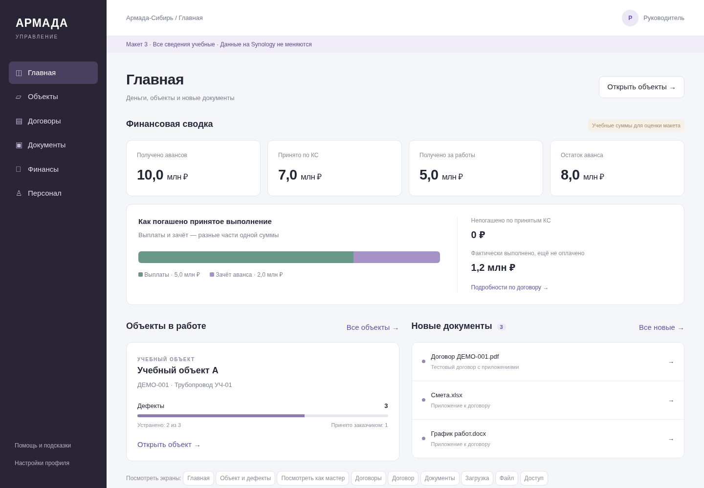
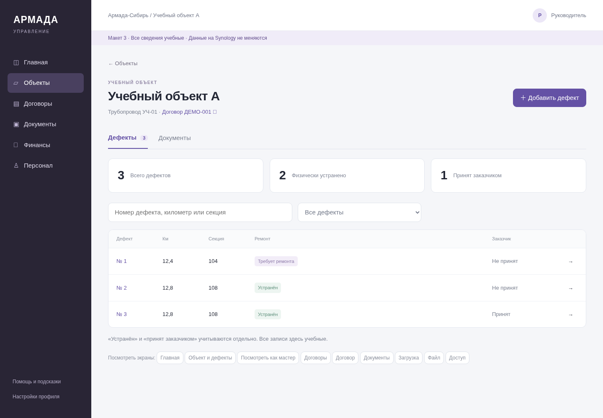
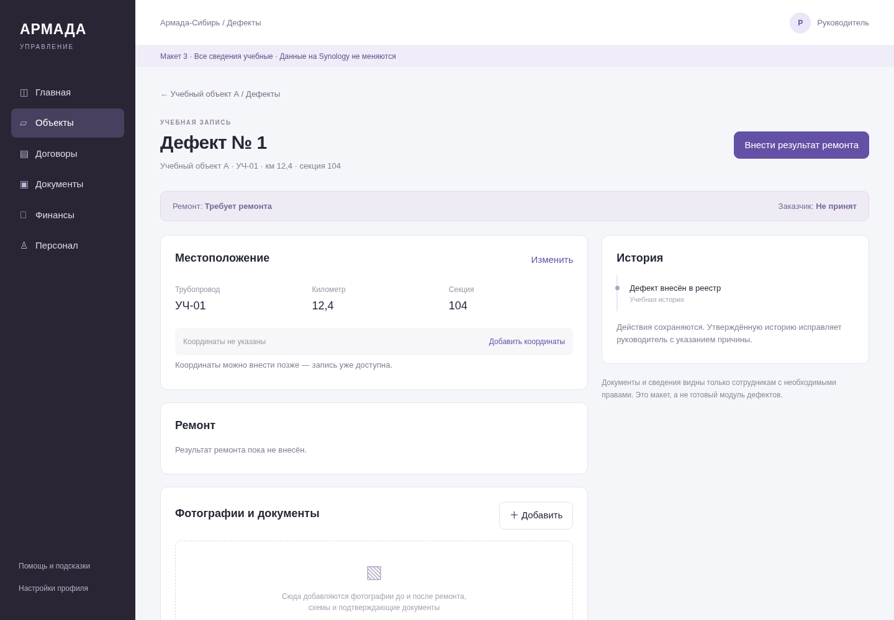
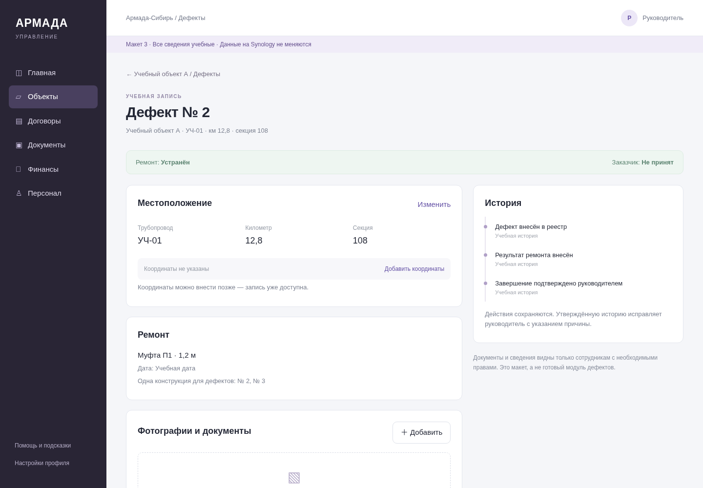

АРМАДА · Макет 3 · Главная, объекты и дефекты
Предложение для обсуждения. Учебные данные. Действующая платформа не изменена.
1. Главная руководителя — деньги и объекты

2. Объект — понятный список дефектов

3. Дефект — место, ремонт и история

4. Ремонт и приёмка заказчиком — отдельно
